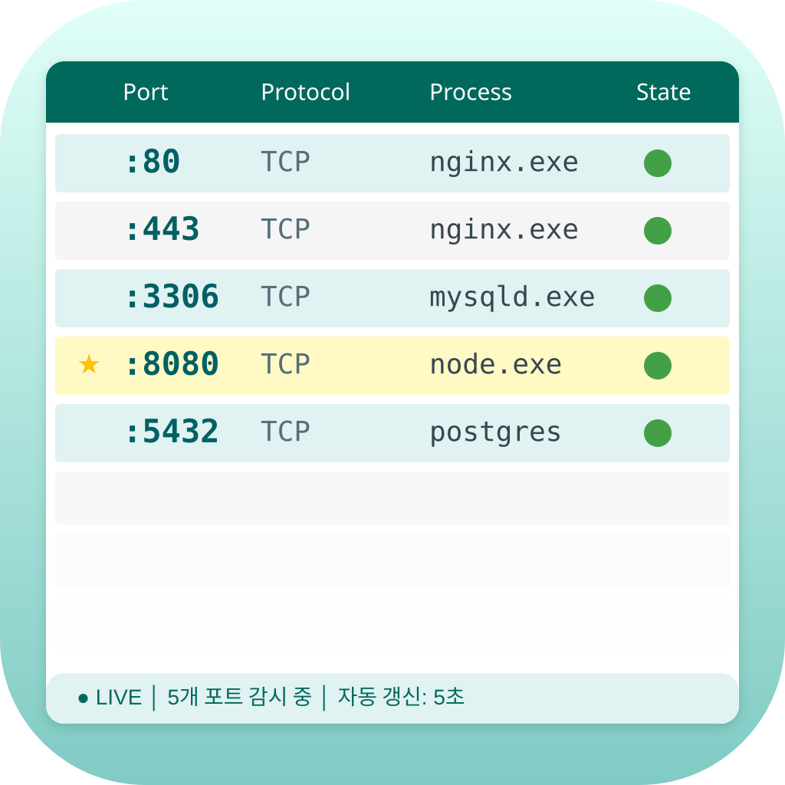
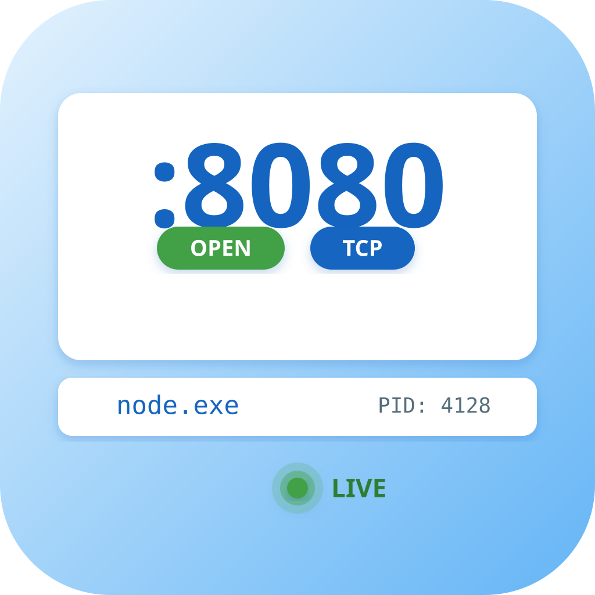
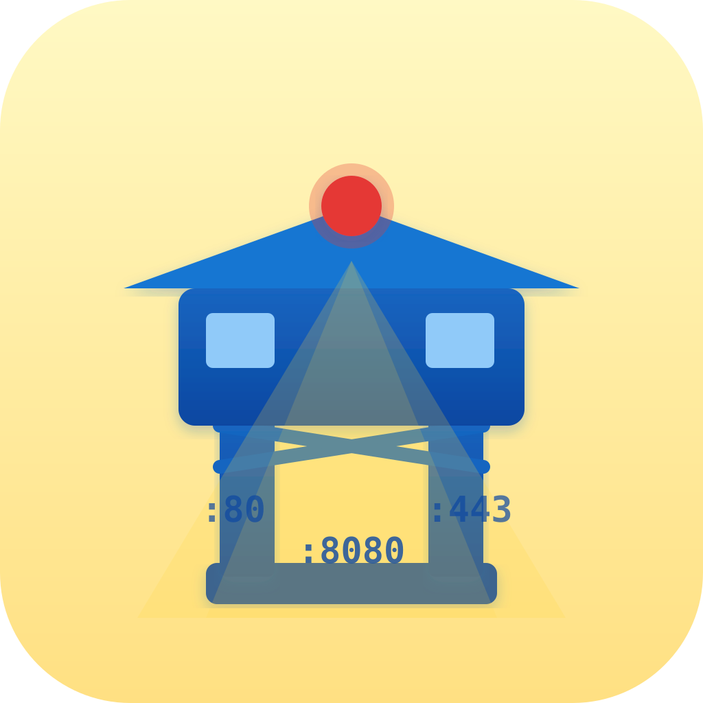
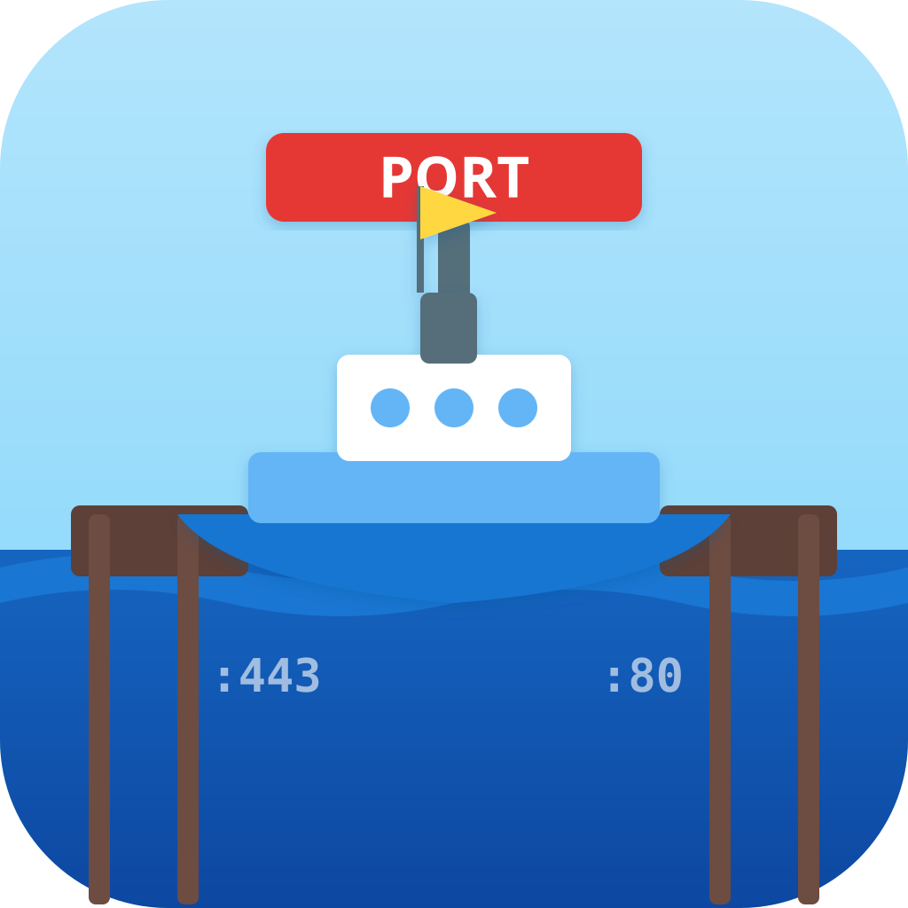
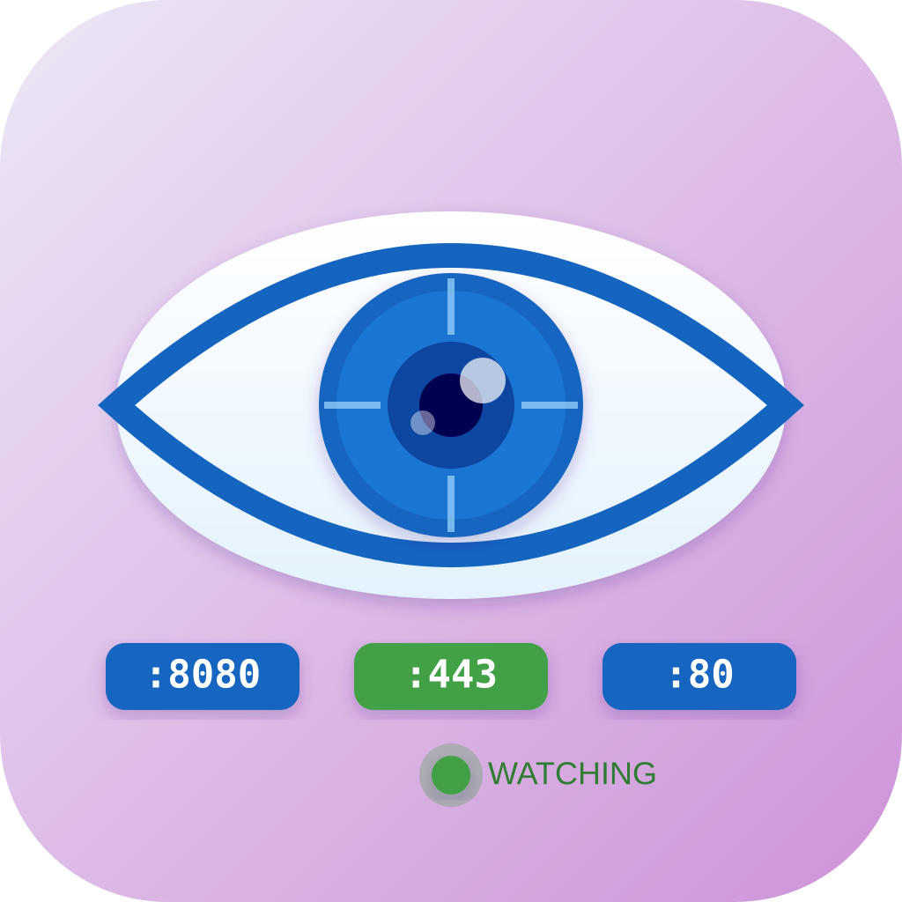
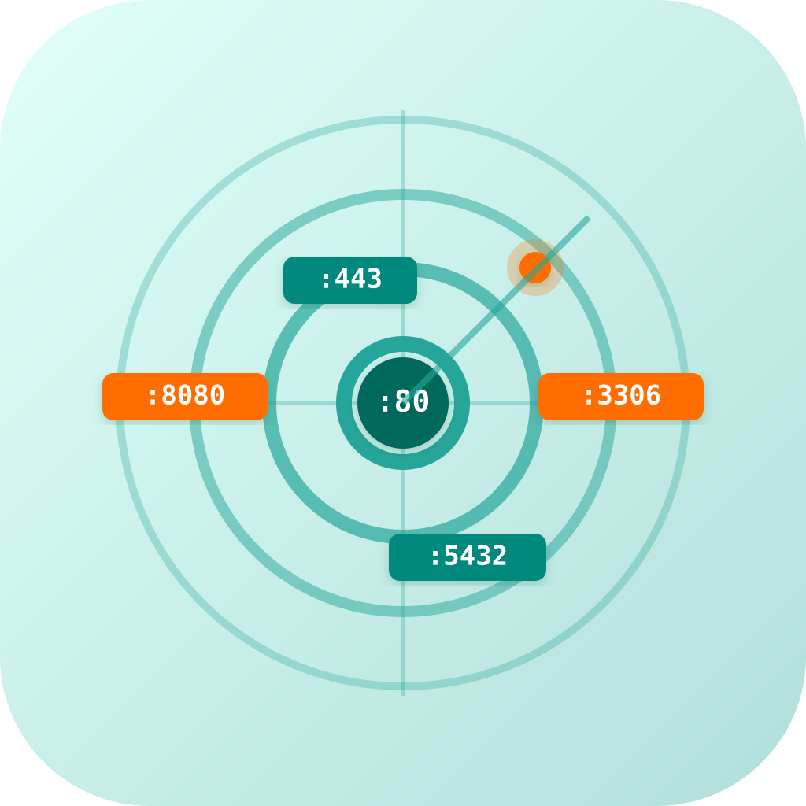

icon_01
literal
:80/:443/:8080 포트 테이블
LIVE 상태 표시 UI

icon_02
literal
":8080 OPEN TCP" 포트 상태
LIVE 표시 직접 표현

icon_03
metaphor
파수꾼 감시탑 — 포트들을
지키는 경비 탑 은유

icon_04
metaphor
항구(Port) + 배 — "Port"의
이중 의미 은유

icon_05
metaphor
큰 눈 — 포트를 지켜보는
감시/Watch 은유

icon_06
hybrid
:PORT 숫자 배지들 + 레이더 원
— 포트 감시 hybrid